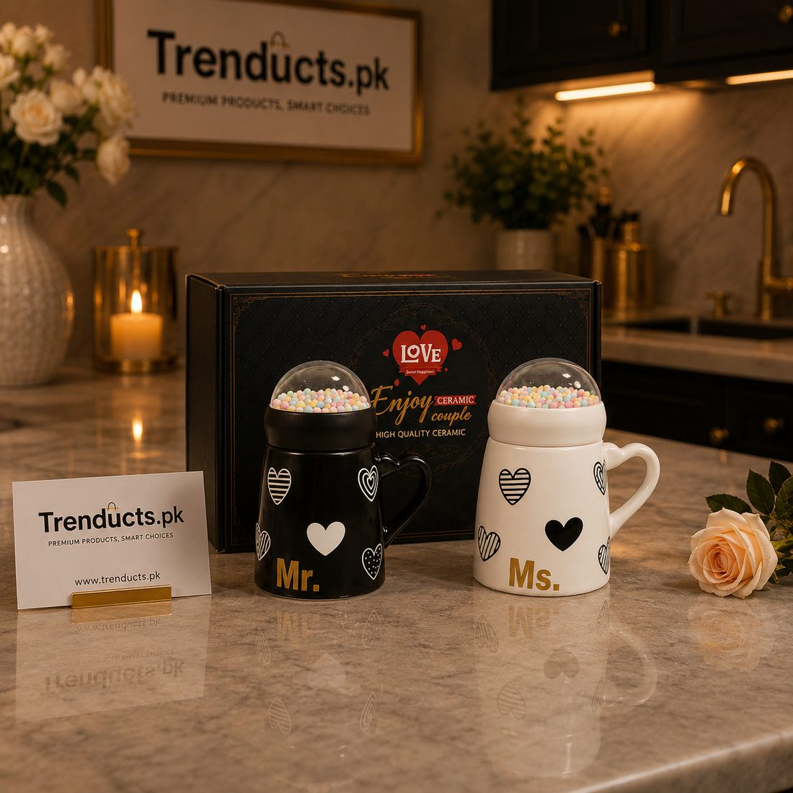
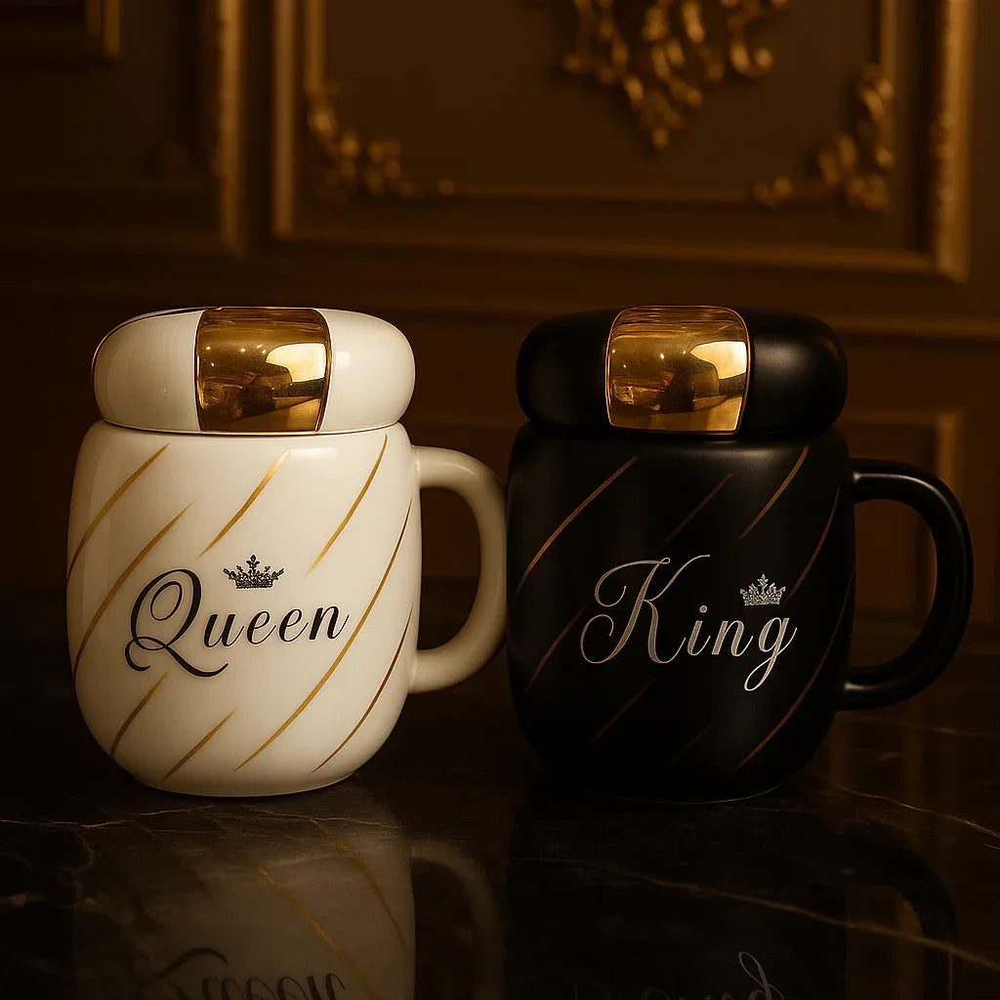
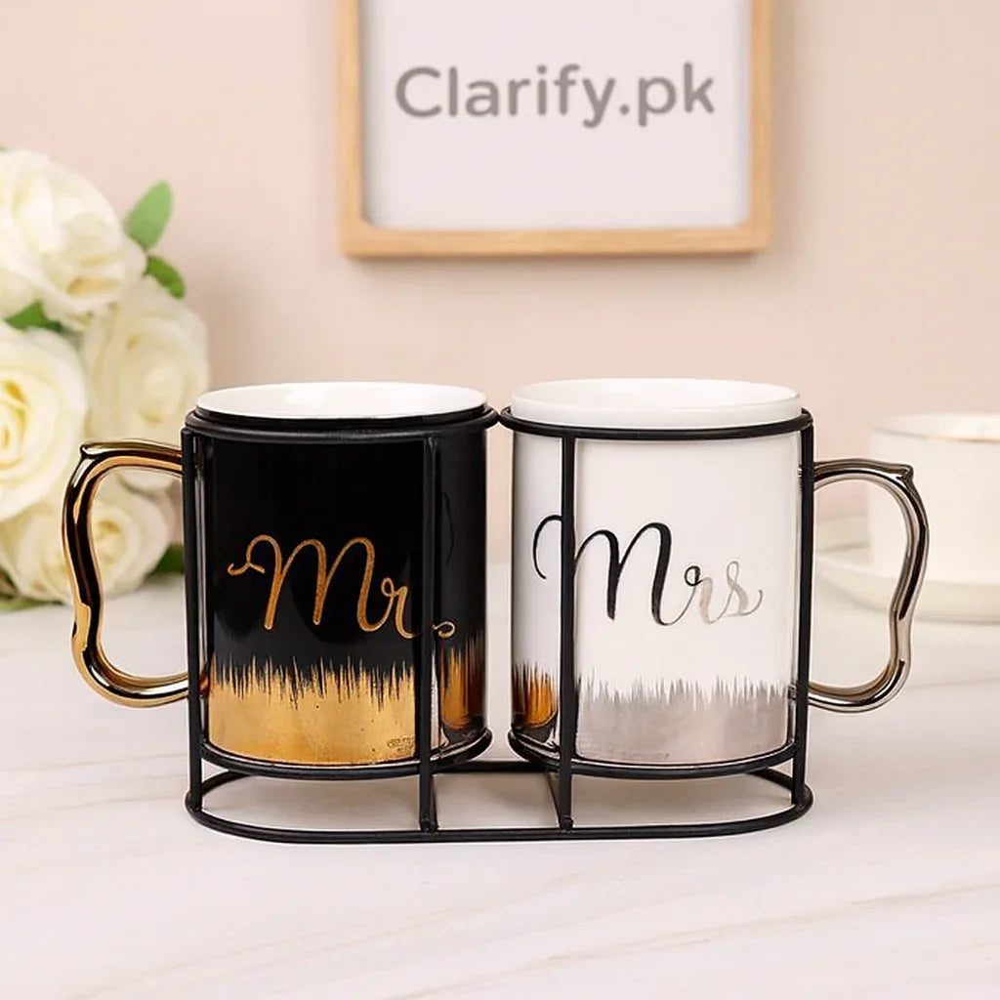

Why matching couple mugs make a meaningful anniversary or wedding gift in Pakistan, with ideas for choosing designs and making the gift personal.



In many Pakistani homes, the day begins and ends with chai. Morning tea before work, the evening cup on the balcony, a late-night cup while chatting after the children are asleep. For many couples, those few minutes over tea are some of the only quiet time they get together in a busy day.
That is why a pair of matching mugs makes such a fitting gift for an anniversary, a wedding or a newly married couple. It is simple, but it becomes part of a daily ritual.
Many gifts end up in a cupboard. Mugs are used every day, so the giver is remembered every day. A matching pair says something about togetherness without being over the top, and it suits almost any budget. It also suits couples of any age, from newlyweds to parents celebrating thirty years.
Think about the couple's personality. Some will love a cheeky slogan; others would prefer something elegant.
A mug set alone is a nice gift. A little personal touch makes it memorable:
At Pakistani weddings, gifts are often cash or household items. A boxed couple mug set is a light, practical alternative or addition, especially from friends and colleagues. It is easy to carry to the venue and does not duplicate the larger items the families usually give.
Children often struggle to find anniversary gifts for their parents, who usually say they do not need anything. A pair of mugs with a sweet card and a packet of their favourite tea is a gesture that parents genuinely enjoy, and they will think of you every time they use them.
Check the size; some couples prefer large mugs, while others like a smaller cup for strong chai. Look at whether the mugs are microwave or dishwasher safe if that matters to the couple. For mugs with printed text, gentle hand washing helps the print last. Mugs with lids are handy for anyone who sips slowly.
Many Pakistani families have a son or daughter working abroad, or a couple living in another city from their parents. Ordering a mug set online for delivery to their home is a simple way to mark an anniversary when you cannot be there. Send a voice note or a message timed with the delivery so the gift arrives with your words, and ask them to send a photo of the first cup of chai they share from the new mugs.
Many mug sets come in a gift box. If not, wrap each mug in tissue and place them in a small basket with the tea and card. A ribbon in the couple's favourite colour finishes it nicely.
For a range of designs, from Mr and Mrs to King and Queen and pairs with stands, browse the mugs and cups at Trenducts, with delivery across Pakistan. More gift ideas are on the Trenducts homepage.
An anniversary is about the shared life two people have built, much of it in ordinary moments. A pair of mugs fits right into those moments, which is exactly what makes it a thoughtful gift.